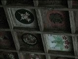

日本最古の道と言われている山の辺の道。 右・左 天理からスタートの場合起点となる石上神宮（いそのかみじんぐう）
美しく豊かな自然とともに、ハイキング気分で出発するとよいでしょう。
左・一休みするのに最適！長岳寺。 鐘もつけます。
右・本堂天井。 本堂の仏像を見ながら足を揉みほぐしましょう。

左・庫裏で、夏はそうめん、冬はにゅうめんをいただけます。お茶だけいただくこともできます。 右・朱印帖に書いてもらう。